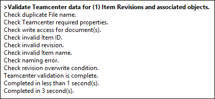

Concept Assistant Publish dialog box
When you publish your conceptual data to Teamcenter, the Concept Assistant Publish dialog box is displayed. The interface consists of a toolbar of commands and three window panes to interactively add the design data created or modified in Concept Workspace into Teamcenter. For information about the commands buttons, see Using the Concept Assistant toolbar.
The Concept Assistant Publish window
The Concept Assistant Publish window contains three window panes. The top pane contains the list of your documents you want to publish to Teamcenter. The lower-left pane contains the Progress Log, and the lower-right pane contains the Error Assistant. The Preview for your documents displays in a free-floating window.
Progress Log
The Progress Log brings everything about your working session together in one place. You can scroll through the log as you work and review what the system has done, what is happening, and might be next.

This is an excellent auditing tool for use when adding your documents to Teamcenter.
Error Assistant
The Error Assistant, located in the lower-right pane of the Concept Assistant Publish window, provides details and suggestions for corrective action to resolve problems found during your session.
Selecting a cell in the Issues column of the Concept Assistant Publish window displays information and associated corrective action for the selected issue. The information continues to display until you click a different cell in the Issues column.
How do I
Create a Concept WorkspaceComparing models in Concept Workspace
Revert files to Teamcenter in Concept Workspace
Push files to a different Concept Workspace
Pull files into a Concept Workspace
Publish concepts to Teamcenter
Learn more
Using Concept Workspace to explore design ideasConcept Workspace workflow
Using the Concept Assistant Publish toolbar
Resolving problems identified in the Issues column (Concept Assistant)
Look up more details
Concept Workspace commandConcept Assistant command
Concept Assistant dialog box